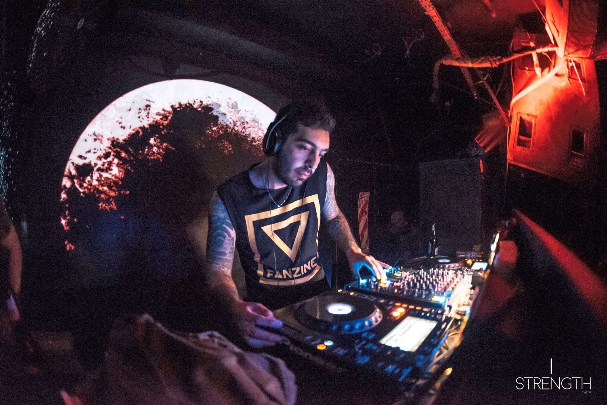
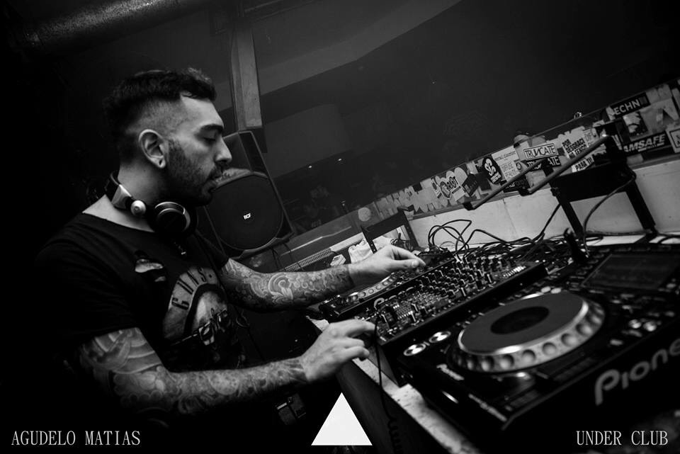
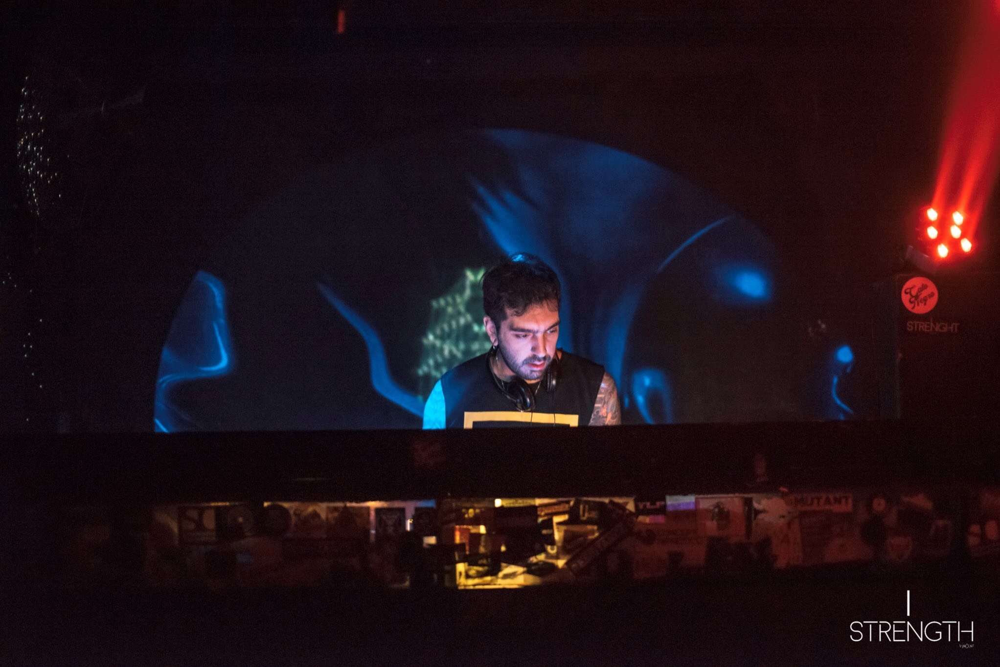
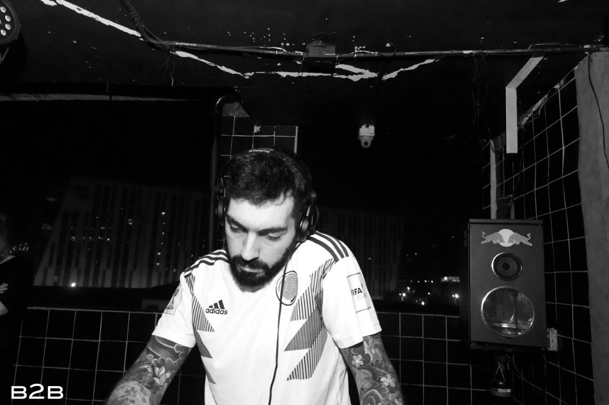
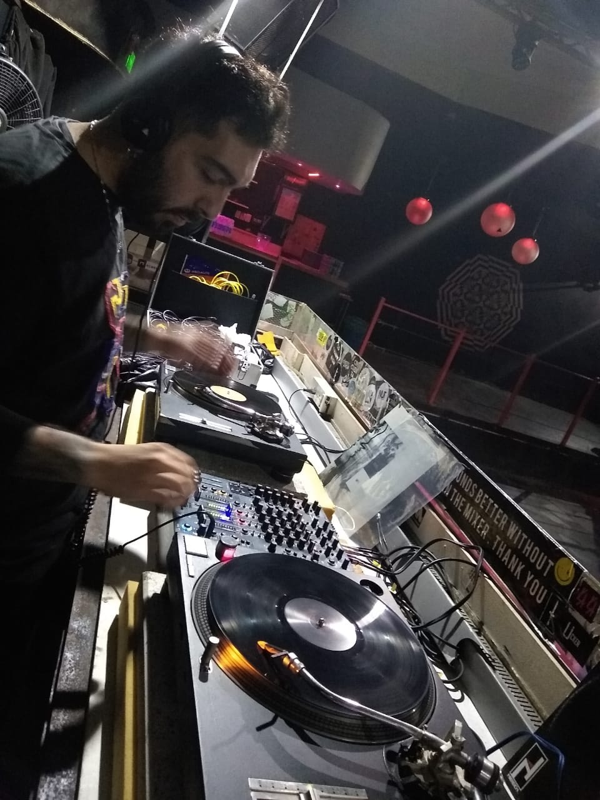
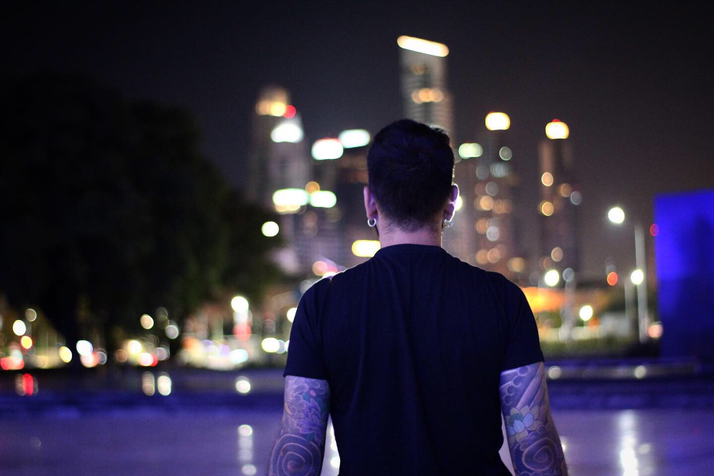
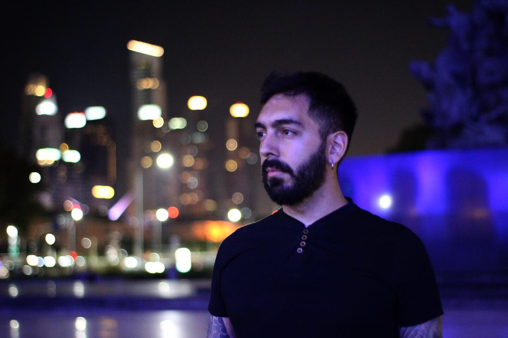
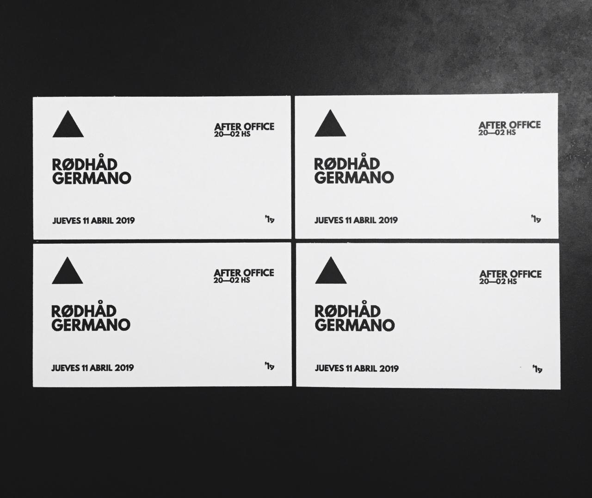
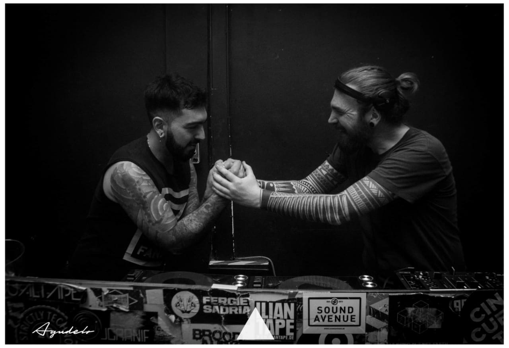

DJ / Producer · Techno · Est. 2005
Germano Ocampo nació el 6 de septiembre de 1990 en Quilmes, sur de la provincia de Buenos Aires. Su carrera arrancó en 2005 con un debut en una disco de Fcio. Varela, y desde ese momento el camino no se detuvo.
Pasó por Mendoza, Córdoba, Santa Fe, Neuquén y Río Negro. Hizo 2 giras a Chile y 1 a Colombia. En Buenos Aires dejó huella en clubs como Under Club, Cocoliche y Crobar, compartiendo cabina con figuras de la escena nacional e internacional.
Fundó Vincent Techno Resistance en 2012 —hoy activo como sello discográfico— y actualmente es parte del colectivo Other Space, gestando el nuevo label VCT junto a curadores, artistas plásticos, productores e ingenieros.
Junto a Minau, es co-fundador y dueño de TCQ Club, uno de los espacios de música electrónica underground de Buenos Aires.









2 CDJ-2000NXS2 o superior + DJM-900NXS2
2 Technics 1200 + mixer 4 canales
Sistema de audio profesional (detalles en rider PDF adjunto)
Bookings · Fechas · Colaboraciones